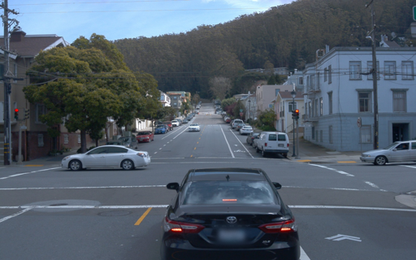
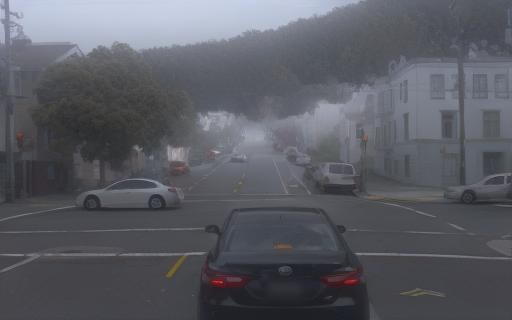
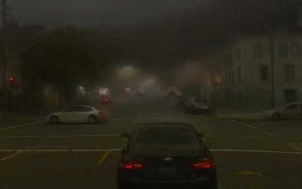
Cyclone is a task-agnostic, all in one weather (clear, fog, rainy, snowy, night) editing model.



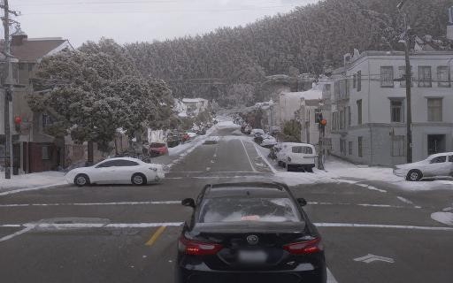
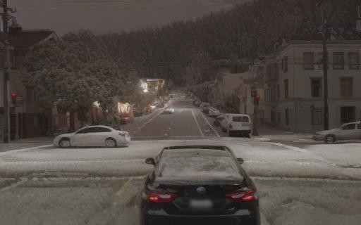
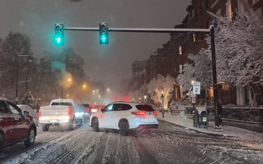
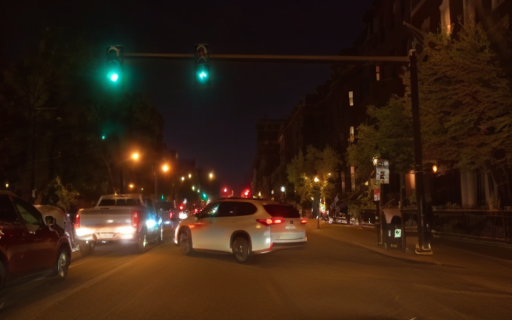
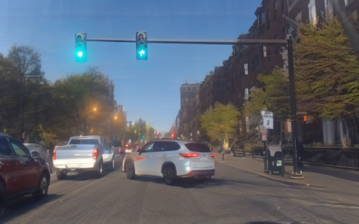
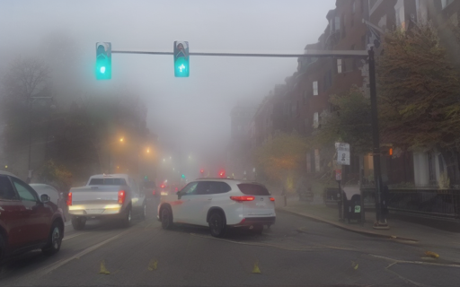
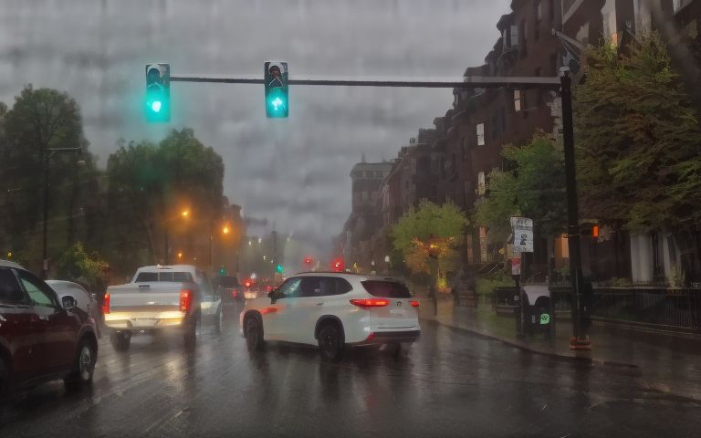
It can be extended to video inference by generating pseudo GT for paired sequence and fine-tuning of a SVD model for temporally consistent editing.
In driving datasets, cameras are typically positioned in a structured left-front-right arrangement, providing shared information across views. We simply stack the multi-view images without any view-specific design as the self-attention layers ensure that each viewpoint aggregates information from the others.
We train and evaluate on both synthetic and real-world datasets, demonstrating its ability to generalize across different domains.
Cyclone can be applied to many driving datasets (e.g., KITTI, nuScenes, Pandaset, Waymo, etc.), allowing perception systems to be tested on more scenarios.
SoTA methods usually focus on object-centric editing and do not work percisely for weather in driving scenarios.
Instruction-based editing models relied on hand-crafted paired data, which is infeasible to obtain in this case and often fails to capture the complexity of real-world weather conditions. Competitive results can be achieved with orders of magnitude lower resources: 20x smaller model size, 1000x less training data, and 100x faster inference speed.
Removing adverse weather effects can improve the performance of downstream perception tasks by providing clearer inputs to the models.
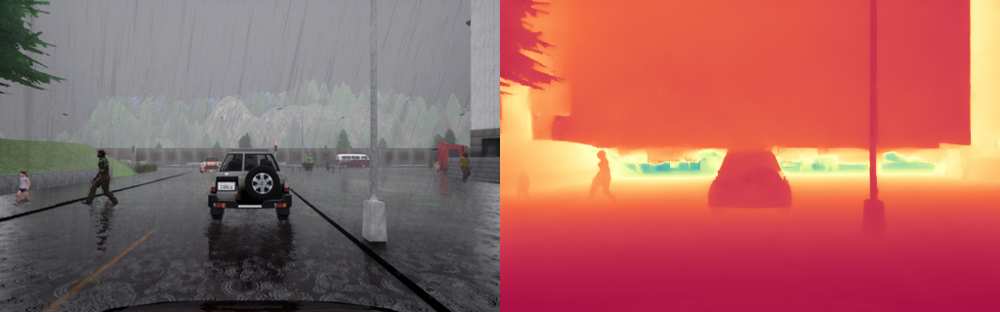
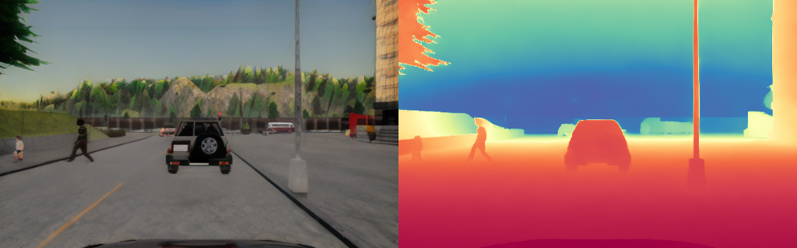
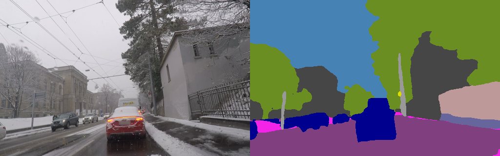
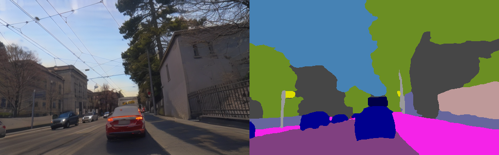
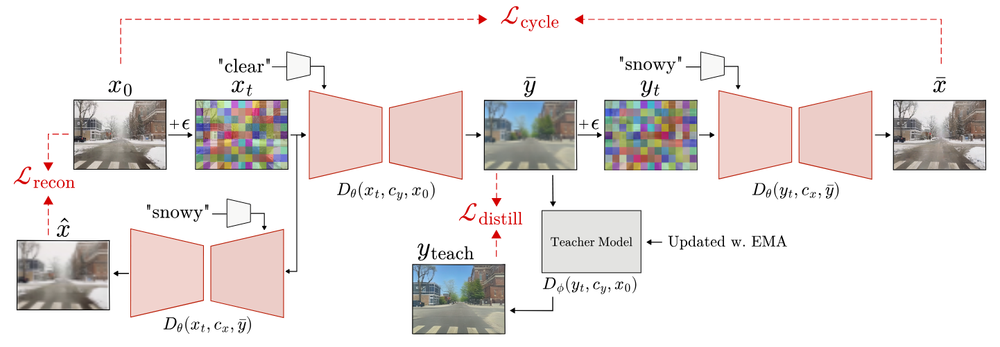
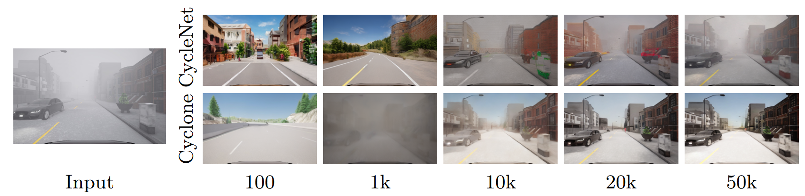
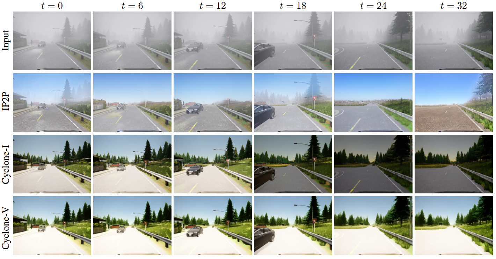